Případová studie: matematika akustického tomografu#
Motivace
Akustický tomograf umožňuje nahlédnout do kmene stojícího stromu bez toho, abychom jej poškodili. Po obvodu kmene rozmístíme čidla, na každé postupně klepneme kladívkem a měříme, za jak dlouho zvuk dorazí k ostatním čidlům. Zdravým dřevem se zvuk šíří rychle, hnilobou pomalu a dutinu musí obejít. Proto se oba defekty projeví zpožděním paprsku. Z naměřených časů chceme sestavit mapu rychlosti zvuku v průřezu kmene, tzv. tomogram.
Úloha je pěknou ukázkou toho, že lineární algebra není jen nástroj pro ruční řešení malých soustav rovnic. Uvidíme, že k rekonstrukci obrazu stačí tři operace, které známe z předchozích přednášek: součin matic, transponování a řešení soustavy lineárních rovnic. Potkáme se zde s integrálem jako nástrojem pro sčítání příspěvků, s maticovým zápisem soustavy, s hodností matice i s iteračními metodami.
Ukážeme si dvě metody, které se pro rekonstrukci obrazu používají: iterační metodu SIRT a filtrovanou zpětnou projekci (FBP). Tato případová studie navazuje na přednášky o integrálech, maticích a soustavách lineárních rovnic. Všechny kroky doprovodíme počítačovými simulacemi, na kterých je vidět, proč je daný krok potřeba a co se stane, když jej vynecháme.
Dva skutečné stromy#
Než se pustíme do matematiky, podívejme se, k čemu má vést. Na obrázku jsou dvě lípy z Valdštejnovy aleje v Jičíně. Oba stromy byly změřeny akustickým tomografem s dvanácti čidly a po pokácení byl kmen v místě měření rozříznut, takže víme, co uvnitř skutečně bylo. Strom 14 má uprostřed velkou dutinu, strom 8 dlouhou trhlinu jdoucí středem kmene. Data i fotografie pořídil Vojtěch Semík v rámci bakalářské práce vedené Valentinem Cristinim.
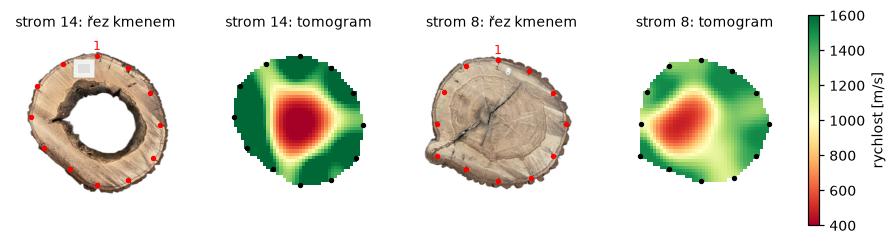
Obr. 2 Fotografie řezu kmenem a tomogram vypočtený z časů průchodu zvuku naměřených na stojícím stromě. Červené body jsou polohy čidel, čidlo číslo 1 je nahoře. Fotografie jsou natočeny shodně s tomogramy.#
Tomogram je mapa rychlosti zvuku v průřezu kmene. Zelená barva znamená rychlost typickou pro zdravé dřevo, červená rychlost výrazně nižší. Jediným vstupem výpočtu jsou polohy čidel a tabulka \(\displaystyle 12\times 11\) naměřených časů, tedy pro každou dvojici čidel čas v obou směrech. V této případové studii si ukážeme, jak se z takové tabulky čísel stane obraz. Budeme k tomu používat uměle vytvořená data, u kterých známe správnou odpověď, a k oběma stromům se vrátíme na konci.
Všechny obrázky v této případové studii vytvořil jediný skript simulace.py, který používá jen knihovny numpy a matplotlib. Matematicky skript odpovídá tomu, co dělá knihovna TomoTree pro vyhodnocování skutečných měření.
Od času průchodu k lineární rovnici#
Pohybuje-li se zvuk rychlostí \(\displaystyle v\) po dráze délky \(\displaystyle L\), trvá mu to čas \(\displaystyle t=\frac Lv\). V kmeni se ale rychlost místo od místa mění. Dráhu proto rozdělíme na krátké úseky délky \(\displaystyle \mathrm ds\), na každém z nich je rychlost prakticky konstantní a průchod úsekem trvá čas \(\displaystyle \frac 1v\,\mathrm ds\). Celkový čas je součtem těchto příspěvků, tedy integrálem
Je to přesně ta úvaha, kterou jsme používali v přednášce o integrálech: veličinu, která se mění, sčítáme po malých kouscích. Dráhu zvuku mezi dvěma čidly budeme nazývat paprsek a budeme předpokládat, že je to úsečka.
Ze vztahu (1) je vidět, že přirozenou veličinou není rychlost, ale její převrácená hodnota.
Definice (Pomalost)
Pomalostí nazýváme převrácenou hodnotu rychlosti, \(\displaystyle x=\frac 1v\). Udává, kolik sekund potřebuje zvuk na uražení jednoho metru.
Zdravé dřevo s rychlostí \(\displaystyle 1500\,\mathrm{m}/\mathrm{s}\) má pomalost přibližně \(\displaystyle 667\,\mathrm{\mu s}/\mathrm{m}\), hniloba s rychlostí \(\displaystyle 500\,\mathrm{m}/\mathrm{s}\) má pomalost \(\displaystyle 2000\,\mathrm{\mu s}/\mathrm{m}\). Poškozené dřevo má tedy velkou pomalost.
Průřez kmene nyní pokryjeme čtvercovou sítí a budeme předpokládat, že uvnitř každé buňky je pomalost konstantní. Buňky očíslujeme a pomalost v \(\displaystyle j\)-té buňce označíme \(\displaystyle x_j\). Integrál (1) se tím změní na konečný součet: je-li \(\displaystyle a_{ij}\) délka, kterou \(\displaystyle i\)-tý paprsek urazí v \(\displaystyle j\)-té buňce, potom čas průchodu po \(\displaystyle i\)-tém paprsku je
To je lineární rovnice pro neznámé pomalosti. Kdybychom pracovali s rychlostmi, měli bychom neznámé ve jmenovatelích a rovnice by lineární nebyla. Volba pomalosti jako neznámé je tedy trik, který z obtížné úlohy dělá úlohu lineární algebry.
Příklad. Uvažujme čtverec rozdělený na čtyři buňky o straně \(\displaystyle 1\). Buňky v horní řadě mají pomalosti \(\displaystyle x_1\), \(\displaystyle x_2\), buňky v dolní řadě \(\displaystyle x_3\), \(\displaystyle x_4\). Dva vodorovné paprsky, dva svislé a jeden paprsek po úhlopříčce přes první a čtvrtou buňku dávají rovnice
Samotné první čtyři rovnice k určení čtyř neznámých nestačí. Zvětšíme-li \(\displaystyle x_1\) a \(\displaystyle x_4\) o libovolné číslo \(\displaystyle \delta\) a současně o stejné číslo zmenšíme \(\displaystyle x_2\) a \(\displaystyle x_3\), žádný z vodorovných ani svislých paprsků změnu nepozná. Teprve úhlopříčný paprsek tuto nejednoznačnost odstraní. Vidíme, že nezáleží jen na počtu paprsků, ale i na tom, kudy vedou. K této myšlence se ještě vrátíme.
Matice soustavy#
Rovnice (2) napsané pro všechny paprsky tvoří soustavu lineárních rovnic, kterou zapíšeme stejně jako v přednášce o soustavách ve tvaru
Vektor \(\displaystyle \vec x\) obsahuje neznámé pomalosti ve všech \(\displaystyle n\) buňkách, vektor \(\displaystyle \vec b\) obsahuje \(\displaystyle m\) naměřených časů a matice \(\displaystyle A\) typu \(\displaystyle m\times n\) popisuje geometrii: řádek odpovídá paprsku, sloupec buňce a prvek \(\displaystyle a_{ij}\) je délka \(\displaystyle i\)-tého paprsku v \(\displaystyle j\)-té buňce. Matice \(\displaystyle A\) závisí jen na poloze čidel a na síti, nikoli na tom, co je uvnitř kmene. To, co je uvnitř, se ukrývá ve vektoru \(\displaystyle \vec x\).
V simulacích použijeme kruhový kmen o poloměru \(\displaystyle 30\,\mathrm{cm}\) a 12 čidel rovnoměrně rozmístěných po obvodu. Každá dvojice čidel dává jeden paprsek, celkem jich je \(\displaystyle \frac{12\cdot 11}{2}=66\). Síť má \(\displaystyle 42\times 42\) buněk o straně přibližně \(\displaystyle 1{,}5\,\mathrm{cm}\), z nichž \(\displaystyle 1282\) leží v kmeni. Máme tedy \(\displaystyle m=66\) rovnic a \(\displaystyle n=1282\) neznámých.
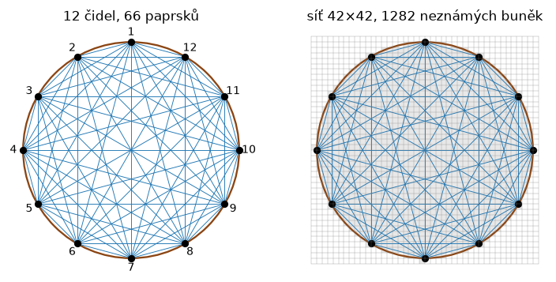
Obr. 3 Čidla na obvodu kmene a paprsky mezi všemi dvojicemi čidel (vlevo). Čidlo číslo 1 je nahoře, stejně jako u skutečných měření. Síť buněk; šedé buňky jsou neznámé soustavy (vpravo).#
Jeden řádek matice \(\displaystyle A\) získáme tak, že najdeme průsečíky paprsku s čarami sítě. Ty paprsek rozdělí na úseky a každý úsek leží v jediné buňce. Délka úseku je hledané číslo \(\displaystyle a_{ij}\). Součet čísel v řádku je roven délce celého paprsku, kterou označíme \(\displaystyle L_i\).
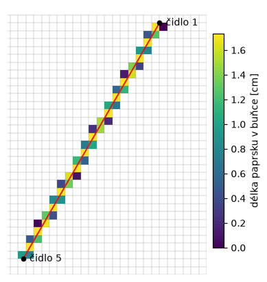
Obr. 4 Paprsek mezi čidly 1 a 5 a délky jeho úseků v jednotlivých buňkách. Paprsek prochází jen 48 buňkami z 1282, všechny ostatní prvky tohoto řádku matice jsou nulové.#
Matice \(\displaystyle A\) je řídká, nenulových prvků má jen necelá tři procenta. Na dalším obrázku je každý nenulový prvek černý bod.
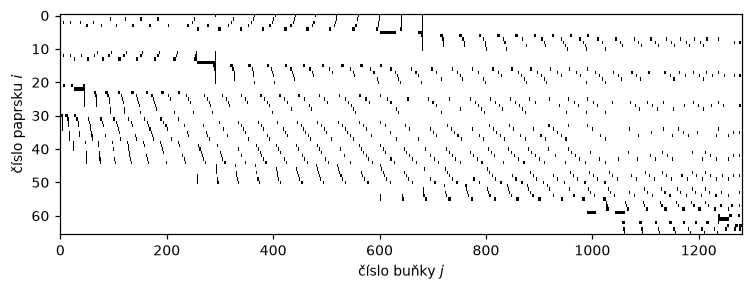
Obr. 5 Struktura matice \(\displaystyle A\). Každý z 66 řádků je jeden paprsek, každý z 1282 sloupců je jedna buňka.#
Tenké a tlusté paprsky#
Sečteme-li čísla ve sloupci matice \(\displaystyle A\), dostaneme celkovou délku všech paprsků, které buňkou procházejí. Toto číslo říká, kolik informace o dané buňce v měření máme. Na obrázku vlevo je vidět, že pokrytí je velmi nerovnoměrné a že 99 buňkami neprochází paprsek žádný. O těchto buňkách rovnice (3) neříkají vůbec nic.
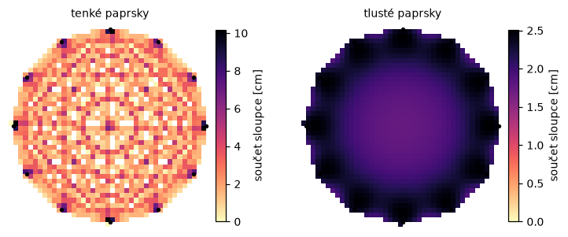
Obr. 6 Součty sloupců matice \(\displaystyle A\): pokrytí buněk paprsky. Tenké paprsky (vlevo) a tlusté paprsky (vpravo).#
Úsečka nulové tloušťky je navíc jen idealizace. Zvuk o vlnové délce desítek centimetrů „ohmatává“ celé okolí spojnice čidel. Proto se používají tlusté paprsky: čas průchodu ovlivňují i buňky v okolí úsečky, a to s vahou, která se vzdáleností od úsečky klesá. Váhy v řádku přitom volíme tak, aby jejich součet byl stále roven délce paprsku \(\displaystyle L_i\). Matice soustavy pak má v řádku více nenulových prvků a pokrytí kmene je spojité (obrázek vpravo). Soustava má pořád tvar (3), mění se jen čísla v matici.
Volitelný obsah 1 (Výpočet matice soustavy v Pythonu)
Výpočet matice soustavy v Pythonu
Jeden řádek matice pro paprsek z bodu a do bodu a + u na síti s čarami hrany (stejnými ve směru obou os).
t = [0.0, 1.0] # parametry průsečíků s čarami sítě
for k in (0, 1): # svislé a vodorovné čáry
tk = (hrany - a[k]) / u[k]
t.extend(tk[(tk > 0) & (tk < 1)])
t = np.unique(t) # seřazené dělicí body
delky = np.diff(t) * np.linalg.norm(u) # délky úseků
stredy = a + np.outer((t[:-1] + t[1:]) / 2, u)
ix = np.searchsorted(hrany, stredy[:, 0]) - 1
iy = np.searchsorted(hrany, stredy[:, 1]) - 1
np.add.at(A[i], ix * n + iy, delky) # zápis do i-tého řádku
Přímá úloha: od obrazu k časům#
Známe-li pomalost ve všech buňkách, je výpočet časů snadný: stačí vynásobit matici \(\displaystyle A\) vektorem \(\displaystyle \vec x\). Tomu se říká přímá úloha. Použijeme ji k tomu, abychom si vyrobili data, na kterých budeme metody zkoušet. Zvolíme si „pravdu“, tzv. fantom: kmen s rychlostí \(\displaystyle 1500\,\mathrm{m}/\mathrm{s}\) a s kruhovou dutinou o poloměru \(\displaystyle 9\,\mathrm{cm}\) mimo střed kmene, ve které je rychlost \(\displaystyle 500\,\mathrm{m}/\mathrm{s}\). Výhodou simulace oproti skutečnému stromu je, že výsledek rekonstrukce můžeme porovnat se správnou odpovědí.
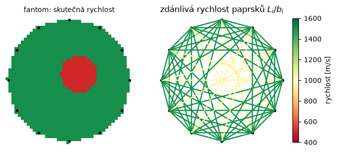
Obr. 7 Fantom (vlevo) a to, co z něj tomograf „vidí“: každý paprsek je obarven svou zdánlivou rychlostí \(\displaystyle L_i/b_i\), tedy délkou paprsku dělenou časem průchodu (vpravo).#
Časy průchodu vycházejí od \(\displaystyle 104\) do \(\displaystyle 640\,\mathrm{\mu s}\). Paprsky, které dutinu míjejí, mají zdánlivou rychlost \(\displaystyle 1500\,\mathrm{m}/\mathrm{s}\). Paprsky procházející dutinou jsou pomalejší, nejpomalejší má zdánlivou rychlost \(\displaystyle 935\,\mathrm{m}/\mathrm{s}\). Žádný paprsek však neukazuje skutečných \(\displaystyle 500\,\mathrm{m}/\mathrm{s}\), protože každý vede zčásti i zdravým dřevem. Zdánlivá rychlost paprsku je průměr přes celou dráhu a sama o sobě neříká, kde na dráze vada leží. To zjistíme jen kombinací informací z paprsků, které se kříží.
Poznámka. Časy v simulacích nepočítáme součinem \(\displaystyle A\vec x\), ale jemnou numerickou integrací vztahu (1) přímo ze zadaného tvaru dutiny. Je to poctivější: skutečný strom také není poskládán ze čtverečků. Rozdíl mezi oběma způsoby výpočtu je \(\displaystyle 1{,}8\,\%\).
Obrácená úloha a proč ji nelze prostě vyřešit#
Nás ovšem zajímá opačný směr: známe matici \(\displaystyle A\) a časy \(\displaystyle \vec b\) a hledáme \(\displaystyle \vec x\). To je obrácená úloha. Nabízí se použít inverzní matici nebo Gaussovu eliminaci, v obou případech však narazíme.
Matice \(\displaystyle A\) není čtvercová, inverzní matice k ní neexistuje. Soustava má 66 rovnic a 1282 neznámých. Hodnost matice \(\displaystyle A\) je 66 a stejnou hodnost má i rozšířená matice soustavy. Podle Frobeniovy věty z přednášky o soustavách rovnic řešení existuje, ale protože hodnost je menší než počet neznámých, je řešení nekonečně mnoho. Volných parametrů je \(\displaystyle 1282-66=1216\).
Že nejde o teoretickou zvláštnost, ukazuje následující obrázek. První tři obrazy jsou tři různá řešení soustavy (3). Všechna reprodukují „naměřené“ časy s přesností na 16 platných cifer, a přesto se od sebe výrazně liší. Žádné z nich se navíc příliš nepodobá fantomu.
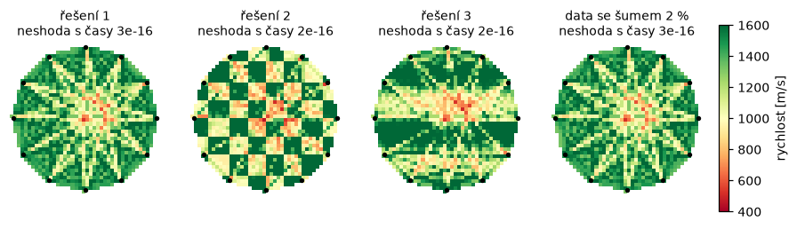
Obr. 8 Tři různé obrazy, které dávají přesně stejné časy průchodu (tenké paprsky). Čtvrtý obraz přesně odpovídá časům, ke kterým byla přidána náhodná chyba 2 %.#
Poučení je dvojí.
Samotný požadavek „obraz musí souhlasit s naměřenými časy“ obraz neurčuje. Musíme přidat další požadavky, například že se pomalost v sousedních buňkách příliš neliší, že leží ve fyzikálně rozumných mezích nebo že se obraz co nejméně liší od stejnorodého kmene.
Měření je vždy zatíženo chybou. Trvat na přesném splnění všech rovnic proto ani není rozumné, nutili bychom obraz vysvětlovat i chyby měření.
Obě metody, které si ukážeme, se s těmito dvěma problémy vyrovnávají, každá po svém.
Zpětná projekce#
Začněme tím nejjednodušším, co lze s časy udělat. Každý paprsek má průměrnou pomalost \(\displaystyle \frac{b_i}{L_i}\). Nevíme, kde na paprsku se zvuk zdržel, tak tuto průměrnou pomalost přisoudíme všem buňkám, kterými paprsek prochází. Buňkou ovšem prochází více paprsků a každý navrhuje jinou hodnotu. Vezmeme tedy jejich průměr, přičemž větší váhu dostanou paprsky, které jsou v buňce delší:
Tomuto postupu se říká zpětná projekce: naměřenou hodnotu promítáme zpět podél paprsku do obrazu. Všimněme si čitatele. Sčítáme přes řádkový index \(\displaystyle i\) při pevném sloupcovém indexu \(\displaystyle j\), pracujeme tedy se sloupci matice \(\displaystyle A\). Jinými slovy, jde o součin transponované matice \(\displaystyle A^T\) s vektorem průměrných pomalostí. To je obecné pravidlo, které budeme dále používat:
součin \(\displaystyle A\vec x\) převádí obraz na data (z buněk na paprsky),
součin \(\displaystyle A^T\vec y\) převádí data na obraz (z paprsků do buněk).
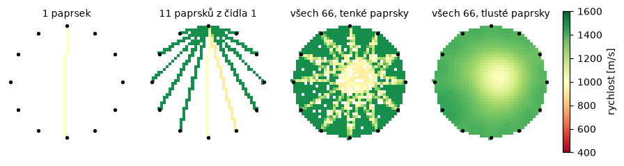
Obr. 9 Zpětná projekce jednoho paprsku, všech paprsků z jednoho čidla a všech 66 paprsků (tenkých a tlustých).#
Zpětná projekce dutinu najde, ale obraz je rozmazaný a kontrast je malý: v místě dutiny vychází rychlost kolem \(\displaystyle 1000\,\mathrm{m}/\mathrm{s}\) místo \(\displaystyle 500\,\mathrm{m}/\mathrm{s}\). Důvod je vidět na dalším pokusu s malou vadou. Paprsek, který vadou prošel, roznese své zpoždění po celé své délce, tedy i do zdravého dřeva. V obraze tak z vady vybíhají paprskovité stopy a vada se rozplyne do okolí.
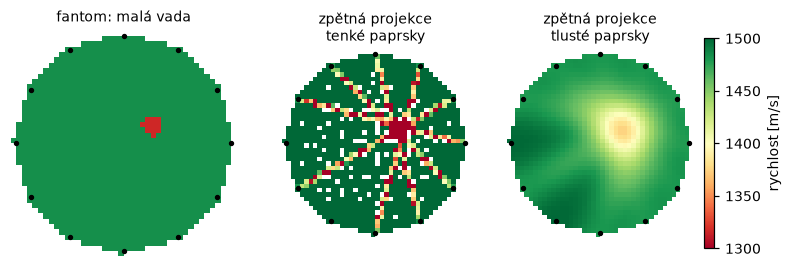
Obr. 10 Zpětná projekce malé vady. U tenkých paprsků jsou dobře vidět stopy paprsků, které vadou prošly. Barevná stupnice je oproti ostatním obrázkům roztažena, aby byl slabý obraz vady vůbec vidět.#
Zpětná projekce tedy není řešením soustavy (3). Kdybychom z jejího obrazu spočítali časy, s naměřenými časy by nesouhlasily. Právě tento nesouhlas využijí obě následující metody k opravě obrazu.
Metoda SIRT: opakovaná oprava obrazu#
Myšlenka iterační opravy#
S iteračními metodami jsme se setkali v přednášce o soustavách lineárních rovnic u Jacobiho a Gaussovy–Seidelovy metody: začneme s libovolným odhadem a opakovaně jej zpřesňujeme. Stejný přístup použijeme zde. Jeden krok vypadá takto.
Z aktuálního obrazu \(\displaystyle \vec x_k\) spočteme přímou úlohou časy \(\displaystyle A\vec x_k\).
Porovnáme je s naměřenými časy. Rozdíl \(\displaystyle \vec r=\vec b-A\vec x_k\) se nazývá reziduum. Je-li \(\displaystyle r_i>0\), je \(\displaystyle i\)-tý paprsek ve skutečnosti pomalejší, než tvrdí náš obraz, a pomalost podél něj je potřeba zvýšit.
Reziduum každého paprsku rozdělíme zpětnou projekcí do buněk, kterými paprsek prochází, a obraz opravíme.
Nejprve se podívejme, jak taková oprava vypadá u dvou rovnic o dvou neznámých, kde si vše můžeme nakreslit. Každá rovnice je přímka v rovině a řešení je průsečík. Kaczmarzova metoda bere rovnice postupně: z aktuálního bodu se přesune kolmo na první přímku, odtud kolmo na druhou přímku a tak stále dokola. Druhá možnost je spočítat opravy podle všech rovnic najednou a použít jejich průměr. Obě cesty vedou k průsečíku.
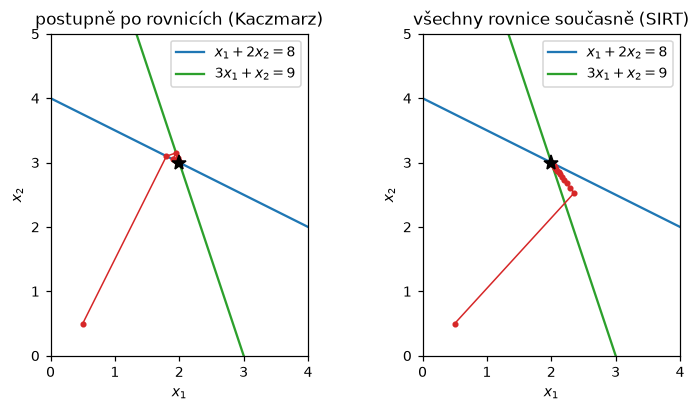
Obr. 11 Soustava dvou rovnic řešená opravami po jednotlivých rovnicích (vlevo) a opravou podle všech rovnic současně (vpravo). Hvězdička je přesné řešení \(\displaystyle x_1=2\), \(\displaystyle x_2=3\).#
Oprava podle všech rovnic současně dala metodě jméno: SIRT je zkratka pro Simultaneous Iterative Reconstruction Technique. Její výhodou je, že výsledek nezávisí na pořadí paprsků a že chyba jednoho měření se zprůměruje s ostatními.
Iterační vzorec#
Opravu z bodu 3 zapíšeme vzorcem podobným zpětné projekci (4). Reziduum \(\displaystyle r_i\) vydělíme délkou paprsku, dostaneme opravu pomalosti připadající na jeden metr paprsku. V každé buňce pak vezmeme vážený průměr oprav od všech paprsků, které buňkou procházejí:
Číslo \(\displaystyle \omega\) se nazývá relaxační parametr a určuje, jak velkou část navržené opravy skutečně provedeme. Maticově lze totéž zapsat jediným řádkem.
Definice (Metoda SIRT)
Nechť \(\displaystyle R\) je diagonální matice, která má v hlavní diagonále převrácené hodnoty součtů řádků matice \(\displaystyle A\), a \(\displaystyle C\) diagonální matice, která má v hlavní diagonále převrácené hodnoty součtů sloupců matice \(\displaystyle A\). Metodou SIRT nazýváme iterační postup
Čteme zprava doleva: spočítáme reziduum, maticí \(\displaystyle R\) je vydělíme délkami paprsků, maticí \(\displaystyle A^T\) je promítneme zpět do buněk a maticí \(\displaystyle C\) vydělíme součtem vah v buňce. Podobně jako u Jacobiho metody potřebujeme inverzní matice jen k maticím diagonálním, a to je zadarmo. Celý krok tvoří dvě násobení matice vektorem.
Jako počáteční odhad \(\displaystyle \vec x_0\) bereme stejnorodý kmen, tedy ve všech buňkách stejnou pomalost \(\displaystyle s_0=\frac{b_1+\cdots+b_m}{L_1+\cdots+L_m}\). Pro náš fantom je \(\displaystyle s_0=759\,\mathrm{\mu s}/\mathrm{m}\), což odpovídá rychlosti \(\displaystyle 1318\,\mathrm{m}/\mathrm{s}\).
Volitelný obsah 2 (Metoda SIRT v Pythonu)
Metoda SIRT v Pythonu
Diagonální matice \(\displaystyle R\) a \(\displaystyle C\) není nutné sestavovat, stačí vektory jejich diagonálních prvků a násobení po složkách.
R = 1 / A.sum(axis=1) # převrácené součty řádků
C = 1 / A.sum(axis=0) # převrácené součty sloupců
x = np.full(n, b.sum() / L.sum()) # stejnorodý počáteční odhad
for k in range(1000):
x = x + omega * C * (A.T @ (R * (b - A @ x)))
x = np.clip(x, x_min, x_max) # ořez na přípustné hodnoty, viz dále
Co se děje během iterací#
Sledujme během iterací dvě čísla. Neshoda s daty je velikost rezidua vydělená velikostí vektoru \(\displaystyle \vec b\) a umíme ji spočítat vždy. Chyba vůči fantomu je relativní odchylka vypočtených pomalostí od správných hodnot. Tu známe jen v simulaci, u skutečného stromu správnou odpověď nemáme.
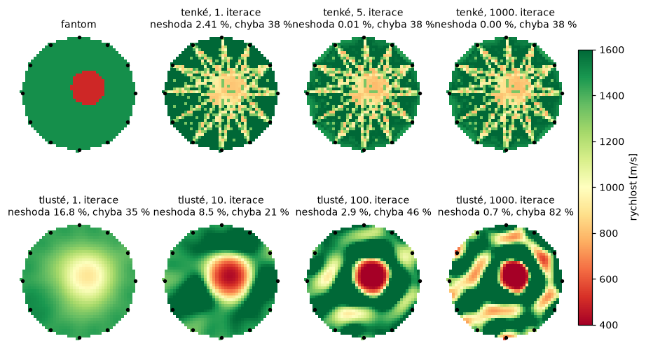
Obr. 12 Průběh metody SIRT s \(\displaystyle \omega=1{,}5\) pro tenké paprsky (nahoře) a pro tlusté paprsky (dole), přesná data, bez dalších úprav.#
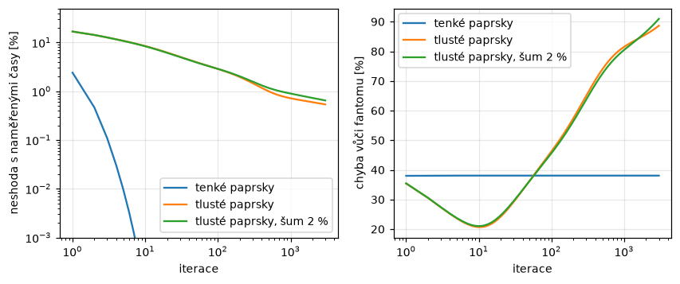
Obr. 13 Neshoda s naměřenými časy (vlevo) a chyba vůči fantomu (vpravo) v závislosti na počtu iterací.#
Simulace ukazuje dvě věci, které na první pohled překvapí.
Tenké paprsky. Metoda konverguje velmi rychle, po pěti iteracích je neshoda s daty \(\displaystyle 0{,}01\,\%\). Obraz je ale špatný: chyba vůči fantomu je \(\displaystyle 38\,\%\), jen o málo lepší než \(\displaystyle 43\,\%\) u stejnorodého počátečního odhadu. Metoda poctivě našla jedno z nekonečně mnoha řešení soustavy, bohužel takové, které mění jen buňky ležící přímo na paprscích. Výsledkem je hvězdice.
Tlusté paprsky. Obraz je zpočátku rozmazaný, postupně se zaostřuje a po deseti iteracích je nejlepší, chyba je \(\displaystyle 21\,\%\). Další iterace však obraz kazí. Neshoda s daty dále klesá, ale v obraze rostou falešné vady při okraji kmene a po tisíci iteracích je chyba \(\displaystyle 82\,\%\). Metoda se snaží do posledního detailu vysvětlit data, která model s tlustými paprsky na čtvercové síti přesně vysvětlit nedokáže. S chybou měření \(\displaystyle 2\,\%\) je tento efekt ještě o něco silnější.
Druhý jev se nazývá semikonvergence a je typický pro obrácené úlohy: lepší shoda s daty neznamená lepší obraz. Jednou z možností je iterace včas zastavit. U skutečného stromu ale nepoznáme, kdy je obraz nejlepší. Lepší je metodu upravit tak, aby ji bylo možné nechat doběhnout.
Volba relaxačního parametru#
Než se k úpravám dostaneme, podívejme se na vliv parametru \(\displaystyle \omega\). Dá se dokázat, že metoda (5) konverguje pro \(\displaystyle 0<\omega<2\). Simulace to potvrzuje: s rostoucím \(\displaystyle \omega\) konvergence nejprve zrychluje, nejrychlejší je v našem případě pro \(\displaystyle \omega=1{,}5\), poté se zpomaluje a pro \(\displaystyle \omega=2{,}5\) metoda diverguje.
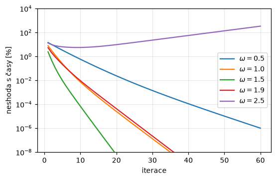
Obr. 14 Neshoda s daty v prvních 60 iteracích pro různé hodnoty relaxačního parametru (tenké paprsky).#
Je to stejná situace jako s délkou kroku u jiných iteračních metod. Příliš opatrný krok znamená pomalý postup, příliš dlouhý krok cíl přestřelí a každá další oprava je větší než ta předchozí.
Ořez na fyzikálně přípustné hodnoty#
První úprava využívá znalost fyziky. Rychlost zvuku v kmeni nemůže být větší než rychlost nejrychlejšího paprsku (lepší než zdravé dřevo materiál není) a nemůže být libovolně malá. Jako dolní mez se bere polovina zdánlivé rychlosti nejpomalejšího paprsku, nejméně však rychlost zvuku ve vzduchu \(\displaystyle 340\,\mathrm{m}/\mathrm{s}\). Pro náš fantom jsou meze \(\displaystyle 470\) a \(\displaystyle 1586\,\mathrm{m}/\mathrm{s}\). Po každé iteraci hodnoty, které z těchto mezí vybočí, vrátíme na mez.
Vyhlazení#
Druhá úprava vyjadřuje očekávání, že se vlastnosti dřeva nemění skokem v každé buňce. Pro každou buňku přidáme k soustavě rovnici, která říká, že pomalost v buňce je rovna průměru pomalostí v sousedních buňkách. Pro buňku se čtyřmi sousedy má tvar
kde \(\displaystyle h\) je velikost buňky a číslo \(\displaystyle \alpha\) určuje, jak velkou váhu požadavek hladkosti má. Rozšířená soustava má \(\displaystyle 66+1282\) rovnic o \(\displaystyle 1282\) neznámých a obecně nemá přesné řešení: požadavek na shodu s daty a požadavek na hladkost jdou proti sobě. Metoda SIRT mezi nimi najde kompromis. Vyhlazení navíc řeší problém buněk, kterými neprochází žádný paprsek, protože jejich hodnotu určí sousedé.
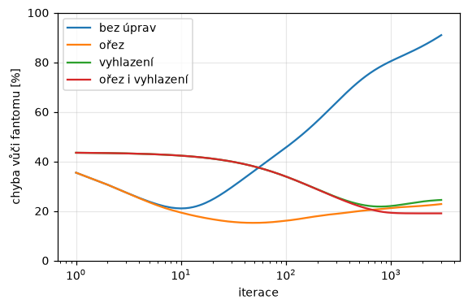
Obr. 15 Chyba vůči fantomu během 3000 iterací pro čtyři varianty metody (tlusté paprsky, data s chybou 2 %, \(\displaystyle \alpha=10\)).#
Bez úprav chyba po desáté iteraci roste. Samotný ořez i samotné vyhlazení růst chyby výrazně omezí a obě úpravy společně vedou k tomu, že se obraz po zhruba tisíci iteracích ustálí a dále se nemění. Počet iterací pak není nutné hlídat. Cenou za vyhlazení je pomalejší konvergence, a proto se používají tisíce iterací.
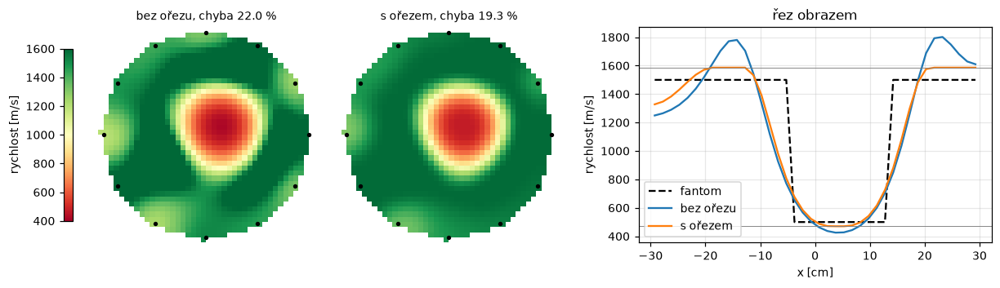
Obr. 16 Vliv ořezu na výsledný obraz (tlusté paprsky, \(\displaystyle \alpha=10\), 1000 iterací). Vpravo je vodorovný řez obrazem vedený dutinou; šedé čáry vyznačují přípustné meze rychlosti.#
Na řezu obrazem je vidět, co ořez dělá. Bez něj rekonstrukce v okolí dutiny „překmitne“ a vychází rychlost až \(\displaystyle 1800\,\mathrm{m}/\mathrm{s}\), tedy vyšší než ve zdravém dřevě. Aby časy souhlasily, musí pak být jinde rychlost naopak nižší a v obraze vznikají falešné vady. Ořez tomu zabrání. Na řezu je také vidět, čeho dosáhnout nelze: ostrý okraj dutiny se z 66 čísel zrekonstruovat nedá, přechod mezi zdravým dřevem a dutinou je vždy pozvolný.
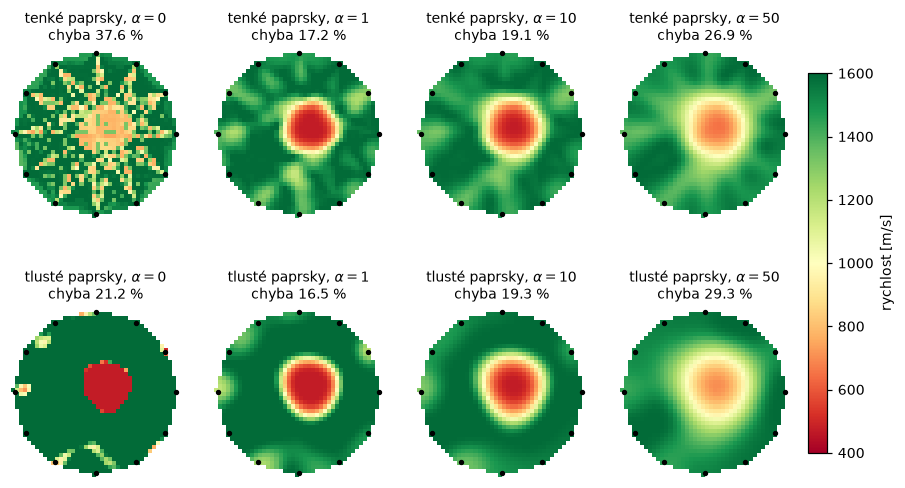
Obr. 17 Vliv parametru vyhlazení \(\displaystyle \alpha\) pro tenké a tlusté paprsky (data s chybou 2 %, ořez, 1000 iterací).#
Bez vyhlazení (\(\displaystyle \alpha=0\)) dávají tenké paprsky hvězdici a tlusté paprsky falešné vady u okraje. Malé vyhlazení obraz výrazně zlepší, a to i pro tenké paprsky. Příliš silné vyhlazení (\(\displaystyle \alpha=50\)) naopak dutinu rozmaže a sníží kontrast. V našem příkladě vychází nejmenší chyba pro \(\displaystyle \alpha=1\); knihovna tomotree používá jako výchozí opatrnější hodnotu \(\displaystyle \alpha=10\), která lépe snáší větší chyby reálných měření.
Filtrovaná zpětná projekce#
Odvození#
Metoda SIRT opravuje obraz mnoha malými kroky. Nešlo by správnou opravu najít najednou? Vyjděme opět ze stejnorodého kmene \(\displaystyle \vec x_0\) s pomalostí \(\displaystyle s_0\) ve všech buňkách a z jeho rezidua \(\displaystyle \vec r=\vec b-A\vec x_0\). Hledejme opravu obrazu ve tvaru zpětné projekce nějakých vhodných čísel \(\displaystyle \vec y\), pro každý paprsek jednoho:
Obyčejná zpětná projekce by za \(\displaystyle \vec y\) dosadila přímo reziduum a viděli jsme, že výsledkem je rozmazaný obraz. Zkusme proto čísla \(\displaystyle \vec y\) určit chytřeji: z požadavku, aby opravený obraz souhlasil s daty. Dosadíme (7) do soustavy \(\displaystyle A\vec x=\vec b\) a upravíme,
Matice \(\displaystyle AA^T\) má názorný význam. Její prvek v \(\displaystyle i\)-tém řádku a \(\displaystyle k\)-tém sloupci je \(\displaystyle \sum_j a_{ij}a_{kj}\), tedy součet součinů délek \(\displaystyle i\)-tého a \(\displaystyle k\)-tého paprsku ve společných buňkách. Měří, jak moc se paprsky překrývají. Dva paprsky, které nemají žádnou společnou buňku, zde mají nulu.
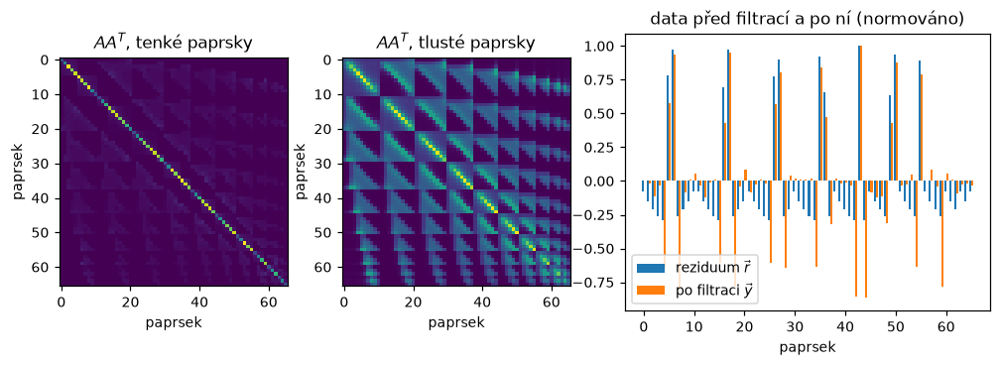
Obr. 18 Matice \(\displaystyle AA^T\) pro tenké a tlusté paprsky (světlejší barva znamená větší překryv paprsků). Vpravo reziduum \(\displaystyle \vec r\) a čísla \(\displaystyle \vec y\) získaná filtrací, obojí vyděleno největší hodnotou.#
Pro tenké paprsky dominuje hlavní diagonála: tenké paprsky se potkávají jen v jednotlivých buňkách, kde se kříží. Tlusté paprsky se překrývají výrazně. A právě překryv je příčinou rozmazání: zpoždění způsobené jednou vadou se objeví ve všech paprscích, které jdou kolem, a zpětná projekce je do obrazu započítá vícekrát. Vyřešením soustavy s maticí \(\displaystyle AA^T\) tento vícenásobný příspěvek odstraníme. Na grafu vpravo je vidět, že čísla \(\displaystyle \vec y\) mají oproti reziduu výraznější záporné hodnoty: paprsky v sousedství vady dostanou zápornou váhu, a tím se z obrazu odečte to, co tam zpětná projekce přidala navíc.
Přechodu od \(\displaystyle \vec r\) k \(\displaystyle \vec y\) se říká filtrace a celé metodě filtrovaná zpětná projekce, zkráceně FBP z anglického filtered back projection. V lékařských tomografech, kde jsou paprsků statisíce a jsou pravidelně uspořádané, se filtrace provádí jinými prostředky, myšlenka je ale stejná.
Tlumení#
Kdybychom soustavu \(\displaystyle AA^T\vec y=\vec r\) vyřešili přesně, dostali bychom obraz, který přesně souhlasí s daty, tedy i s chybami měření. Navíc je matice \(\displaystyle AA^T\) pro tlusté paprsky špatně podmíněná: malá změna pravé strany vede k velké změně řešení. To je stejný problém jako u metody SIRT s příliš mnoha iteracemi. Pomoc je jednoduchá, k hlavní diagonále matice přičteme kladné číslo \(\displaystyle \mu\).
Definice (Filtrovaná zpětná projekce)
Filtrovanou zpětnou projekcí s tlumením \(\displaystyle \mu\) nazýváme obraz
kde \(\displaystyle \vec x_0\) je stejnorodý počáteční odhad a \(\displaystyle I\) je jednotková matice.
Výpočet má tři kroky a každý je jednou maticovou operací:
reziduum stejnorodého kmene, \(\displaystyle \vec r=\vec b-A\vec x_0\),
filtrace, tj. vyřešení soustavy \(\displaystyle (AA^T+\mu I)\vec y=\vec r\),
zpětná projekce, \(\displaystyle \vec x=\vec x_0+A^T\vec y\).
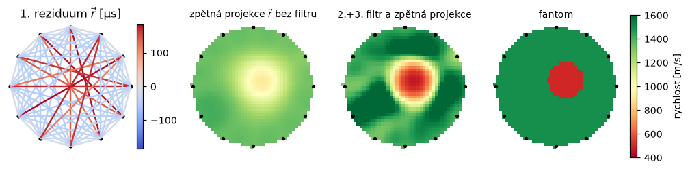
Obr. 19 Kroky filtrované zpětné projekce: reziduum na jednotlivých paprscích, jeho zpětná projekce bez filtrace, výsledek s filtrací a fantom (tlusté paprsky, přesná data).#
Tlumení \(\displaystyle \mu\) se zadává jako násobek průměrného prvku v hlavní diagonále matice \(\displaystyle AA^T\), aby jeho význam nezávisel na velikosti kmene ani na jednotkách. Tento násobek budeme nazývat stručně tlumení. Jeho vliv ukazuje následující obrázek.
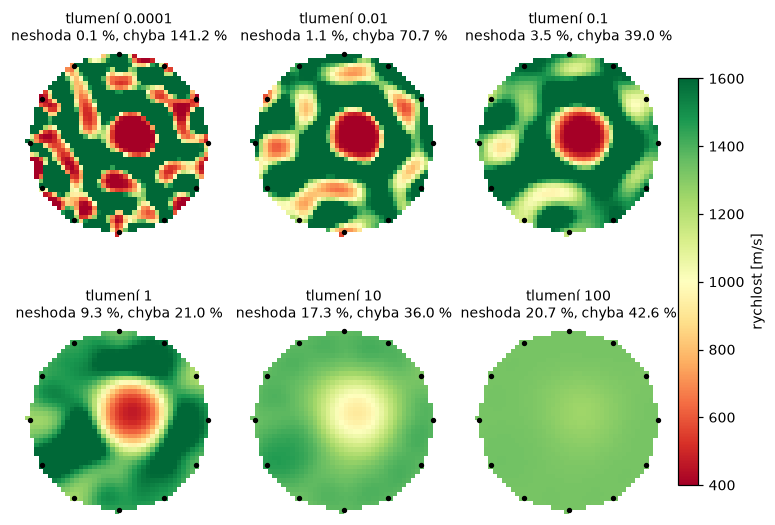
Obr. 20 Filtrovaná zpětná projekce pro různé hodnoty tlumení (tlusté paprsky, data s chybou 2 %).#
Pro malé tlumení obraz téměř přesně souhlasí s daty (neshoda \(\displaystyle 0{,}1\,\%\)), ale je znehodnocen falešnými vadami. Chyba vůči fantomu je \(\displaystyle 141\,\%\).
Pro velké tlumení je filtr skoro vyřazen z činnosti. Matice \(\displaystyle AA^T+\mu I\) je pak přibližně rovna \(\displaystyle \mu I\), tedy \(\displaystyle \vec y\approx\frac 1\mu\vec r\), a dostáváme obyčejnou zpětnou projekci rezidua, navíc s malou vahou. Obraz je rozmazaný a blíží se stejnorodému kmeni.
Mezi oběma krajnostmi leží rozumný kompromis. Pro tlumení rovné jedné je chyba \(\displaystyle 21\,\%\), tedy srovnatelná s metodou SIRT.
Tlumení zde hraje stejnou roli jako vyhlazení a včasné zastavení iterací u metody SIRT: brání tomu, abychom datům věřili víc, než si zaslouží.
Volitelný obsah 3 (Filtrovaná zpětná projekce v Pythonu)
Filtrovaná zpětná projekce v Pythonu
x0 = np.full(n, b.sum() / L.sum()) # stejnorodý kmen
G = A @ A.T # překryvy paprsků, matice m x m
mu = tlumeni * np.trace(G) / m # násobek průměrného diagonálního prvku
y = np.linalg.solve(G + mu * np.eye(m), b - A @ x0) # filtrace
x = x0 + A.T @ y # zpětná projekce
Volitelný obsah 4 (Souvislost s metodou nejmenších čtverců)
Souvislost s metodou nejmenších čtverců
Vzorec (8) lze získat i jinou cestou. Hledejme obraz \(\displaystyle \vec x\), který je kompromisem mezi shodou s daty a blízkostí ke stejnorodému kmeni, tedy obraz, pro který je nejmenší součet
Srovnání metod#
Obě metody vycházejí ze stejné soustavy \(\displaystyle A\vec x=\vec b\), ze stejného počátečního odhadu a obě používají dvojici operací „přímá úloha \(\displaystyle A\), zpětná projekce \(\displaystyle A^T\)“. Liší se v tom, jak se vyrovnávají s nejednoznačností řešení a s chybami měření.
SIRT |
FBP |
|
|---|---|---|
Výpočet |
tisíce jednoduchých kroků |
jedno řešení soustavy \(\displaystyle 66\times 66\) |
Ochrana před chybami měření |
vyhlazení \(\displaystyle \alpha\), ořez |
tlumení \(\displaystyle \mu\) |
Fyzikální meze rychlosti |
v každé iteraci |
až dodatečně na hotovém obraze |
Co se dodává navíc k datům |
hladkost obrazu |
blízkost ke stejnorodému kmeni |
Na čtyřech různých fantomech s chybou měření \(\displaystyle 2\,\%\) dávají obě metody podobné výsledky a obě jsou výrazně lepší než obyčejná zpětná projekce.
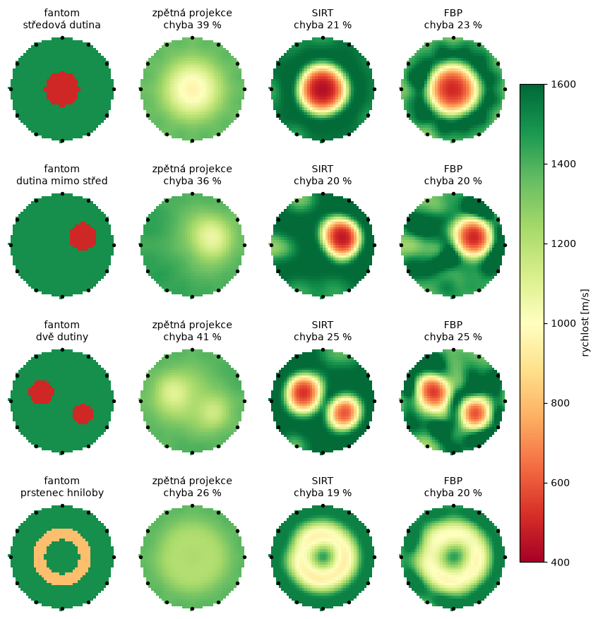
Obr. 21 Čtyři fantomy a jejich rekonstrukce zpětnou projekcí, metodou SIRT (\(\displaystyle \alpha=10\), ořez, 1000 iterací) a filtrovanou zpětnou projekcí (tlumení 1). Tlusté paprsky, data s chybou 2 %.#
Fantom |
Zpětná projekce |
SIRT |
FBP |
|---|---|---|---|
středová dutina |
39 % |
21 % |
23 % |
dutina mimo střed |
36 % |
20 % |
20 % |
dvě dutiny |
41 % |
25 % |
25 % |
prstenec hniloby |
26 % |
19 % |
20 % |
Obraz z metody SIRT bývá o něco klidnější, FBP má ve zdravém dřevě více slabých falešných struktur. Polohu a přibližnou velikost vady určí obě metody správně. Žádná z nich ale nevykreslí ostrý okraj dutiny a u prstence hniloby je zdravé jádro uprostřed sotva naznačeno.
Lepší obraz už nezískáme důmyslnějším výpočtem, ale jen větším množstvím dat. Zvýšení počtu čidel z 8 na 24 zvýší počet paprsků z 28 na 276 a obraz se viditelně zpřesní.
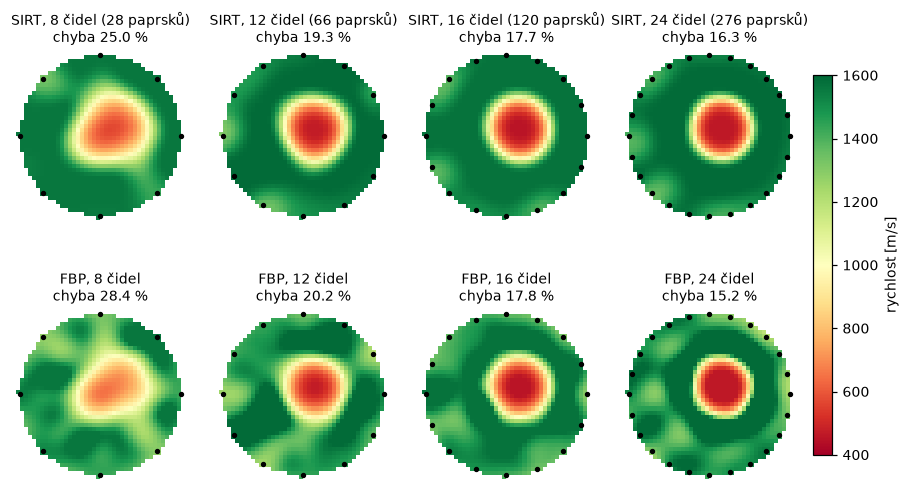
Obr. 22 Vliv počtu čidel na rekonstrukci metodou SIRT (nahoře) a FBP (dole). Data s chybou 2 %.#
Počet čidel |
Počet paprsků |
Chyba SIRT |
Chyba FBP |
|---|---|---|---|
8 |
28 |
25 % |
28 % |
12 |
66 |
19 % |
20 % |
16 |
120 |
18 % |
18 % |
24 |
276 |
16 % |
15 % |
Poznámka (meze modelu). Celou dobu jsme předpokládali, že se zvuk šíří po úsečce. Ve skutečnosti se šíří po nejrychlejší dráze a dutinu obejde zdravým dřevem. Naměřený čas je pak kratší, než odpovídá přímému paprsku, a dutina se v tomogramu jeví menší a „zdravější“, než ve skutečnosti je. Dřevo je navíc anizotropní materiál: rychlost zvuku v radiálním a tangenciálním směru se liší, takže ani ve zcela zdravém kmeni nejsou zdánlivé rychlosti všech paprsků stejné. S oběma jevy je nutné při interpretaci skutečných tomogramů počítat. Naše simulace je záměrně neobsahují, aby byla vidět samotná matematika rekonstrukce.
Zpět ke skutečným stromům#
Vraťme se ke dvěma lípám z úvodu a proveďme s jejich měřeními přesně tytéž kroky jako s fantomy. Liší se jen vstup: polohy čidel nejsou na kružnici, ale tam, kde byla čidla na kmeni skutečně umístěna, a časy pocházejí z přístroje. Každý paprsek byl změřen v obou směrech a do vektoru \(\displaystyle \vec b\) bereme průměr obou časů. Matice \(\displaystyle A\), metoda SIRT i filtrovaná zpětná projekce zůstávají beze změny, včetně hodnot parametrů (tlusté paprsky, \(\displaystyle \alpha=10\), \(\displaystyle \omega=1{,}5\), tlumení 1).
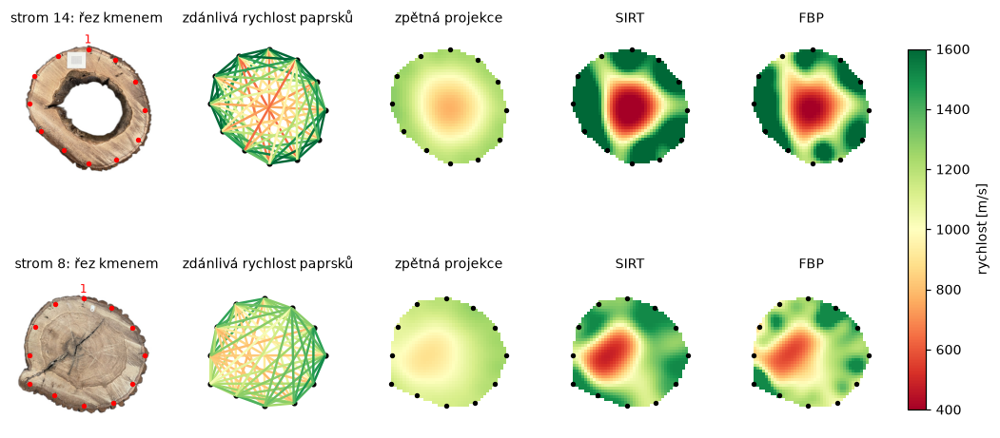
Obr. 23 Skutečná měření: fotografie řezu, zdánlivé rychlosti paprsků, zpětná projekce, metoda SIRT a filtrovaná zpětná projekce. Čidlo číslo 1 je nahoře a fotografie jsou natočeny shodně s tomogramy.#
Strom 14 (dutina) |
Strom 8 (trhlina) |
|
|---|---|---|
Obvod kmene v místě měření |
1,68 m |
1,81 m |
Naměřené časy |
68–874 μs |
102–717 μs |
Zdánlivé rychlosti paprsků |
641–1956 m/s |
783–1514 m/s |
Neshoda s daty, zpětná projekce |
22 % |
17 % |
Neshoda s daty, SIRT |
8 % |
12 % |
Neshoda s daty, FBP |
10 % |
12 % |
U skutečných stromů správnou odpověď v číslech neznáme, chybu vůči fantomu tedy spočítat nelze. Máme jen neshodu s daty a fotografii.
Strom 14. Zpětná projekce ukazuje uprostřed kmene rozmazanou pomalejší oblast. Obě metody z ní udělají výraznou vadu obklopenou zdravým dřevem. Její poloha, mírně posunutá od středu kmene doprava, odpovídá poloze dutiny na fotografii. Rychlost v dutině vychází u metody SIRT na dolní přípustné mezi, kterou je rychlost zvuku ve vzduchu, u FBP těsně nad ní.
Strom 8. Zde je výsledek poučný jinak. Trhlina je úzká, tomogram však ukazuje rozsáhlou oblast nízké rychlosti v té části kmene, kterou trhlina prochází. Zvuk trhlinu nepřekoná a musí ji obejít, takže všechny paprsky, které trhlinu kříží, jsou pomalé, ať ji kříží kdekoli. Model s přímými paprsky toto zpoždění vysvětlí jediným možným způsobem, pomalým materiálem v celé oblasti, kterou tyto paprsky procházejí. Tomogram zde tedy neukazuje tvar vady, ale její akustický stín. To je přesně ta mez modelu, o které jsme mluvili v předchozí poznámce.
Na skutečných datech se také projeví vše, co simulace neobsahovaly: chyby měření, anizotropie dřeva a nepřesnosti v poloze čidel. Je to vidět na neshodě s daty, která je i po rekonstrukci kolem deseti procent, a na tom, že nejrychlejší paprsky mezi sousedními čidly mají zdánlivou rychlost vyšší, než bývá ve dřevě obvyklé. Bez vyhlazení, ořezu a tlumení by se všechny tyto chyby propsaly do obrazu jako falešné vady.
Shrnutí, hlavní myšlenky#
Obr. 24 A jaká je hlavní message? Zdroj: pixabay.com#
Čas průchodu zvuku kmenem je integrál z převrácené hodnoty rychlosti. Rozdělením průřezu na buňky se z integrálu stane součet a pro pomalosti v buňkách dostáváme soustavu lineárních rovnic \(\displaystyle A\vec x=\vec b\). Matice \(\displaystyle A\) obsahuje délky paprsků v buňkách a závisí jen na geometrii měření.
Soustava má mnohem více neznámých než rovnic, a proto má nekonečně mnoho řešení. Shoda s naměřenými časy sama o sobě obraz neurčuje a kvůli chybám měření ani není rozumné na přesné shodě trvat. K datům je nutné přidat další požadavek: hladkost obrazu, fyzikálně přípustné hodnoty nebo blízkost ke stejnorodému kmeni.
Součin s maticí \(\displaystyle A\) převádí obraz na časy, součin s transponovanou maticí \(\displaystyle A^T\) rozděluje hodnoty z paprsků zpět do buněk. Tato zpětná projekce sama dává jen rozmazaný obraz, je však základem obou metod.
Metoda SIRT obraz opakovaně opravuje: spočítá časy pro aktuální obraz, porovná je s naměřenými a rozdíl promítne zpět do obrazu. Aby se obraz dalšími iteracemi nekazil, doplňuje se vyhlazením a ořezem na přípustné hodnoty rychlosti.
Na skutečných stromech obě metody spolehlivě odhalí velkou dutinu. U trhliny ukazuje tomogram spíše oblast, kterou zvuk musí obcházet, než skutečný tvar vady. Tomogram je proto nutné číst se znalostí toho, co model zanedbává.
Filtrovaná zpětná projekce najde opravu najednou. Před zpětnou projekcí data upraví vyřešením malé soustavy s maticí \(\displaystyle AA^T+\mu I\), která popisuje vzájemný překryv paprsků. Tlumení \(\displaystyle \mu\) zde hraje stejnou roli jako vyhlazení u metody SIRT.
Přehled symbolů#
Symbol |
Význam |
Poznámka |
|---|---|---|
\(\displaystyle v\) |
rychlost zvuku |
|
\(\displaystyle x_j\) |
pomalost v \(\displaystyle j\)-té buňce, \(\displaystyle x_j=1/v_j\) |
neznámé soustavy \(\displaystyle A\vec x=\vec b\) |
\(\displaystyle b_i\) |
čas průchodu po \(\displaystyle i\)-tém paprsku |
|
\(\displaystyle a_{ij}\) |
délka \(\displaystyle i\)-tého paprsku v \(\displaystyle j\)-té buňce |
prvky matice soustavy \(\displaystyle A\) |
\(\displaystyle L_i\) |
délka \(\displaystyle i\)-tého paprsku |
součet \(\displaystyle i\)-tého řádku matice \(\displaystyle A\) |
\(\displaystyle m\), \(\displaystyle n\) |
počet paprsků, počet buněk |
\(\displaystyle m\) jinde hmotnost |
\(\displaystyle s_0\) |
pomalost stejnorodého kmene |
počáteční odhad |
\(\displaystyle \vec r\) |
reziduum, \(\displaystyle \vec r=\vec b-A\vec x\) |
|
\(\displaystyle R\), \(\displaystyle C\) |
diagonální matice převrácených součtů řádků a sloupců |
metoda SIRT |
\(\displaystyle \omega\) |
relaxační parametr |
metoda SIRT |
\(\displaystyle \alpha\) |
váha vyhlazení |
metoda SIRT |
\(\displaystyle D\) |
matice diskrétního Laplaceova operátoru |
jinde diagonální matice nebo difuzní koeficient |
\(\displaystyle h\) |
velikost buňky sítě |
|
\(\displaystyle \mu\) |
tlumení |
filtrovaná zpětná projekce |
Upozornění Velká část dokumentu byla vygenerována pomocí LLM Claude Fable 5.2. Dokument však vychází ze zkušeností autora s tvorbou knihovny pro zpracování dat akustického tomografu a za správnost odpovídá autor.